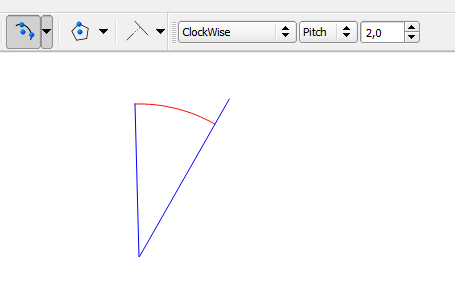

Settings¶
Cercle¶
Number of segment by quadrant. QGis’s default is 8.

Examples:
| 3 segments by quadrant | 36 segments by quadrant |
Arcs¶
Feature segmentation:
Change arc to a line with desired segmentation Segmentation can be done with a defined angle or a length of line
Angle direction:
ClockWise Counter ClockWise
For polygon: Arc can be converted to polygon by Pie Segment or Chord
Examples with options bar:
| Images |

|
|  |
Sytles¶
Like QGIS, CADDigitize let you apply edit styles.